A live map of a lecture. Speech is transcribed on the Mac, Claude sorts it into topics at each pause, and one engine feeds several ways of drawing them: 3D blobs, or a chalkboard.
Updated 31 Oct 202615 entries1 open proposalRepo: ~/dev/snakk
M0ScaffoldDoneVite + React + react-three-fiber, Hono API server, whisper-server managed by the API, CLAUDE.md, project skills, this build log.
M1Local transcriptionDoneSilero voice detection in the browser, utterances to whisper.cpp large-v3-turbo on Metal, interim captions, language badge, session recorder.
M2Topic engineDoneCategorizer endpoint (claude -p, API or offline), pure reducer with guardrails, debug drawer, replay and typed input.
M3Scene v1DoneBlob per topic, keyword bubbles rising and merging, sub-topic links, column layout with soft repulsion.
M4Scene v2In progressDone: keywords on the blob texture, bloom, per-section colour, presenter mode, 30 motion options tested on a 5-minute lecture, Tor's picks merged as the default. Open: remove the unused options.
M5HardeningIn progressDone: pause-length and caption settings, vocabulary hint, WhisperKit adapter (untested). Open: 45-minute test lecture, Ollama provider.
M6More visualizationsIn progressDone: engine split from drawing, view switcher, chalkboard first draft. Open: Tor's direction on the chalkboard.
Entries, newest first
Day 2 31 Oct 2026
Note
Commits from here on, the app moves into web/, sub-topics stop overlapping
Work is now committed as it lands, on the branch day-2 (not pushed). The first commit is a baseline of everything up to now; each change after that is its own commit, so the history shows what moved.
The root is tidier: the browser app (index.html, public/, src/) lives in web/, next to server/, shared/ (imported as @shared), fixtures/, scripts/ and docs/. Checked: typecheck, all tests, a production build, and both views rendering the lecture after the move.
Fixed the overlap Tor spotted on the chalkboard: two sub-topics were stacked a fixed distance apart, so a wrapped title plus its keywords ran into the next one. They now stack by their real height, shrink a little when the cell is tight, and keep one keyword each rather than becoming unreadable. Cells are a bit taller to make room. A new test builds exactly that case and checks nothing overlaps or leaves its cell.
Tests
35 passing
Commits
b644dc0 baseline, e608097 web/ move
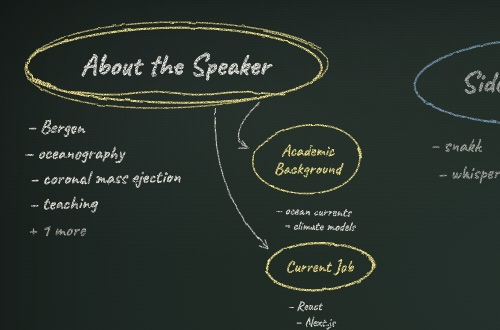
A section with two sub-topics, Academic Background and Current Job, stacked under each other with their keywords, nothing overlapping.Milestone
Chalkboard, first draft
A 2D board in chalk. Each section is circled in its own colour of chalk with its keywords written underneath; sub-topics hang off it on a short arrow; arrows between sections trace the path of the talk, and a return to an earlier section is drawn in yellow (the lecture's return to magnetism at 3:35 shows up as one).
It is written the way a teacher writes: three sections to a row, the next row running back the other way so the arrow never crosses the board, and nothing written ever moves. Circles and arrows trace themselves on, words appear left to right, and the section being talked about is circled a second time and underlined while the others step back. Once the board is too full to read at once, the view eases along to follow the current section.
The chalk look is one SVG filter (grain plus ragged edges) over hand-drawn paths: ellipses that wander and overshoot their start, slightly tilted handwriting in Caveat (bundled, so it works offline).
Checked on the recorded lecture at 2:52 and at the end, in headless Chrome. Open: this is a first draft to react to. Arrows for long jumps (e.g. magnetism to the last row) still cut across keyword lists, and the follow view can tuck the top row under the top bar outside presenter mode.
Sections on the lecture board
10, in 4 rows
Keywords per section
up to 10, then "+n more"
New dependency
@fontsource-variable/caveat
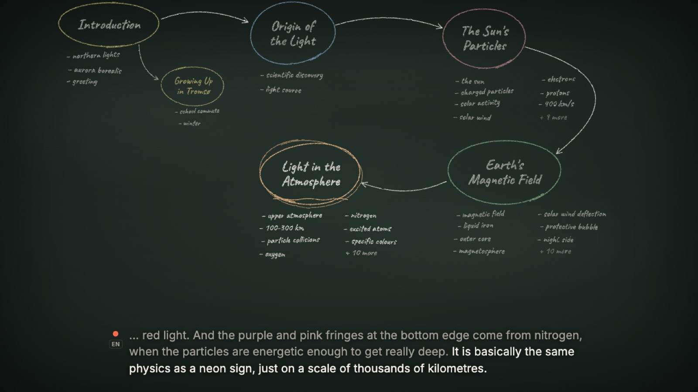
Chalkboard at 2:52 of the lecture: five sections circled in coloured chalk with keywords listed below, a sub-topic hanging off the introduction, and arrows tracing the talk from section to section.Decision
One engine, many ways to draw it
Context
Tor wants to try other visual techniques than the 3D blobs, starting with a 2D chalkboard, without rebuilding transcription and categorization each time. The code already kept most logic apart from the scene, but the shared state spoke in bubble terms (bubbles, pulses) and nothing stopped a view from reaching into engine internals.
Choice
src/engine/ holds everything that is not drawing (speech, topic engine and reducer, session and replay, store, selectors) behind one public file, src/engine/index.ts. src/visuals/ has one folder per visualization, each registered in registry.ts against a small contract: a full-screen component, loaded on demand, that reads the engine and at most lands keywords. src/ui/ is the shell (top bar, captions, controls) shared by all views.
Considered
Separate packages in a monorepo: cleaner on paper, but more ceremony than two views need today.
A visualization flag inside the 3D scene: would keep three.js loaded for a 2D board and blur the boundary.
Consequences
Pick a view with the new switcher in the top bar, the V key, or ?viz=chalkboard; the choice is remembered per browser and views can be switched mid-lecture. The engine now records a trail of where the talk went, and selectors (talkView, sectionHops) give every view the same reading of it; the chalkboard draws its arrows from them. Neutral names replace the bubble terms (pendingKeywords, landKeyword, landedAt). Views that do not animate keywords let the shell land them on schedule. A new architecture test fails if the engine imports rendering code or a view reaches past the engine's index; it caught one such import on its first run. Capture tooling moved into the repo (npm run capture, output in a git-ignored captures/), and .gitignore now also covers local Claude settings and editor folders.
chalkboard to bubbles mid-replay, no console errors
flowchart LR
mic[Microphone] --> stt[engine/transcript\nVAD + whisper.cpp]
stt --> te[engine/topics\nTopicEngine + reducer]
te <--> claude[server: claude -p\nSonnet 5.5]
te --> store[(engine/store\n+ selectors)]
store --> bub[visuals/bubbles\n3D, three.js]
store --> chalk[visuals/chalkboard\n2D, SVG]
store --> ui[ui shell\ncaptions, controls, switcher]
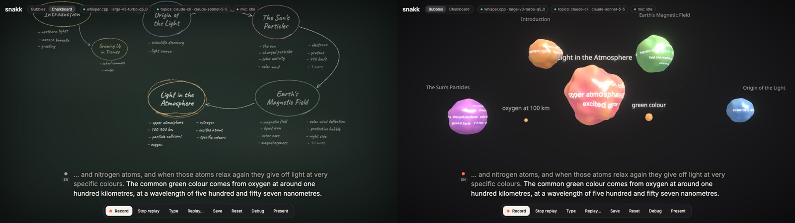
The same moment of the lecture in both views, switched live with the new Bubbles / Chalkboard toggle in the top bar.Decision
Tor's motion picks are now the default
Context
Tor picked one of the options for each of the ten moments on the motion-studies page. Played together on the full lecture, the picks worked, but once about ten sections sat around the stage ring their titles collided and one ran off the right edge.
Choice
Default look (DEFAULT_LOOK in src/scene/look.ts): stage layout, wandering idle drift, keywords born near their topic, spiral flight, a nudge on arrival, new sub-topics budding off the current one, finished sub-topics fused on as lobes, a slower scene during pauses, other sections receding, typewriter titles.
Consequences
Ring positions now make room for each section's title: blob and title are treated as one box, the section on stage stays put and the others slide aside (sideways when there is no room above or below). Titles of the sections waiting around the ring shrink smoothly to three quarters of full size, so the current topic reads first. Recorded the whole lecture again with no URL options: every title on screen, none overlapping. The other options still work through ?look= for comparison. Open: remove the unused options once Tor has lived with the merged look.
Tests
24 passing (1 new)
New guardrail
10 real titles, every section on stage in turn: no overlap, nothing off screen
Run checked
full 5.5-min lecture, 9 stills
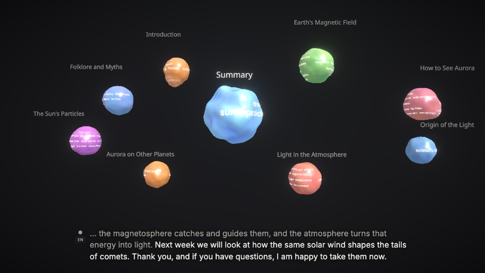
End of the northern-lights lecture with the merged look: Summary large in the middle, nine sections around it, every title on screen and none overlapping.
Day 1 30 Oct 2026
Milestone
Motion studies: ten moments, three options each
Recorded a 5.5-minute lecture on the northern lights through the real categorizer (fixtures/sessions/lecture-northern-lights-claude-sonnet-5-5.json, also replayed by the fixture tests). Categorization held up: 9 sections, 2 sub-topics, and the return to magnetism at 3:35 reused the existing section.
The scene did not: by the end it is a row of nine equal marbles with colliding titles, an empty middle, keywords born on top of the captions, identical flight arcs, and a glow on the current topic too faint to notice.
Added ?look=dimension:option variants for ten moments (layout, idle motion, keyword birth, flight, arrival, new topic, finished sub-topic, voice, focus, titles), three options each, default unchanged. Replays can now seek (fromMs), so every option was captured at the same lecture second: 35 headless runs, stills, a clip and a motion-trail composite each. Picks go through the motion-studies artifact: https://claude.ai/artifact/VjWR8di4pinatyncNLuke9
Organic layouts now size sections by their share of the talk instead of all hitting the column cap. Tor's picks were merged on 2026-10-31 (next entry).
Lecture
5:30, 38 sentences
Categorizer calls
38, median 3.6 s
Options captured
30 + 5 references
Tests
23 passing
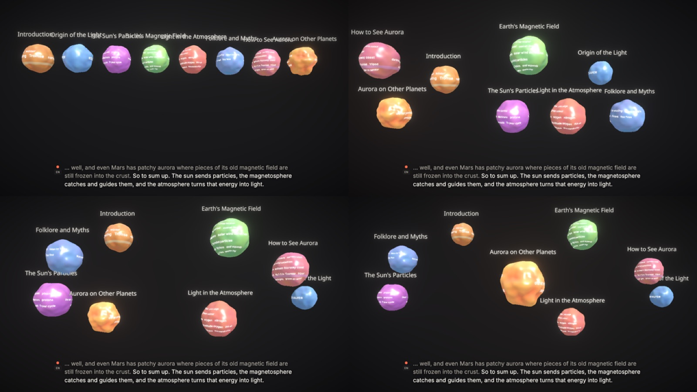
Four layouts at 5:22 of the lecture: today’s single row, a scattered constellation, a loose ring, and centre stage with the current section large in the middle.Decision
Sub-topics drip into their section, then melt in
Context
You were not happy with the necks between sub-topics and sections. I proposed four directions: a droplet stream with absorption, orbiting moons, a soap-bubble cluster, and light threads.
Choice
Droplet stream, then absorb. Only the sub-topic being talked about floats below its section, and separate droplets bud off it and rise into the section. When you move on, it drifts up and melts in, leaving a light band on the section like a gas giant's stripe, and its keywords join the section's surface.
Considered
Orbiting moons on a faint ring.
Soap-bubble cluster with flat shared walls.
Glowing threads with particles flowing up.
Consequences
Earlier sub-topics are no longer separate blobs; the debug drawer still lists the full tree. A section shows up to 7 bands. Checked with a replay of the demo session, during an active sub-topic and after absorption.
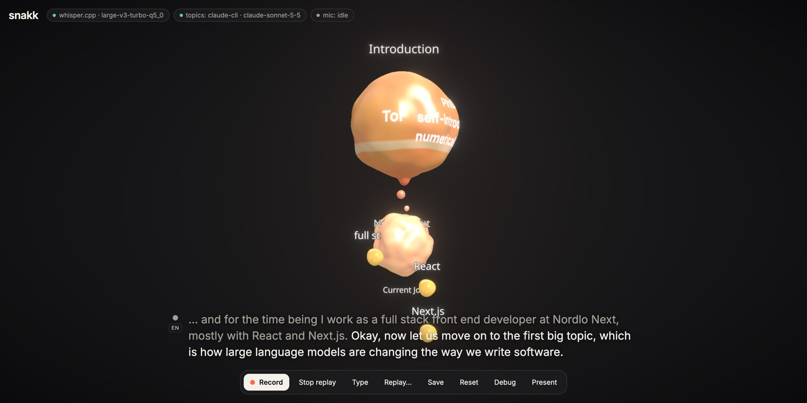
Introduction with a light band from the absorbed Academic Background; Current Job floats below it while small droplets rise and melt into the section.Decision
Each section and its sub-topics are now one seamless surface
Context
Your feedback on the gooey necks: there was a visible crease where each neck met a blob. You asked for a unified mesh.
Choice
Separate meshes always crease where they intersect, so each section group is now ray-marched as a signed distance field. The blobs and the swaying necks are combined with a smooth union, so they melt into each other like metaballs. Colour and keyword ink are blended with the same weights, so they flow through the joins.
Considered
Marching-cubes metaballs: seamless, but rebuilt on the CPU every frame at low resolution, and keywords cannot sit on the surface.
Hiding the crease with matching colours: cheaper, but the crease stays visible in the highlights.
Consequences
All blobs, including sections without sub-topics, are drawn by one shader per section group. Up to 7 sub-topics per section are drawn; more are dropped from the surface. The pixel ratio is capped at 1.5 to keep the ray marching smooth.
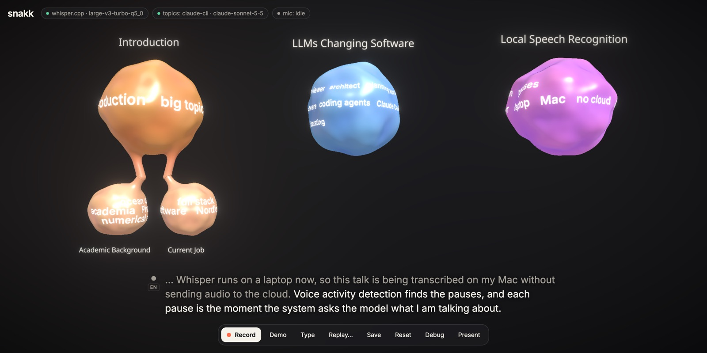
Introduction drawn as one continuous orange shape: the section blob flows through two necks into Academic Background and Current Job, keywords wrapped on each part.Note
Sub-topics now hang from their section by a gooey neck
Your feedback: the dashed line should be a gradient curve so the blobs flow together, like two drops pulling apart.
The line is replaced by a tube that grows out of both blobs, narrows in the middle, sways in a slow S-curve and fades from the sub-topic's colour to the section's. Checked with a replay of the demo session.
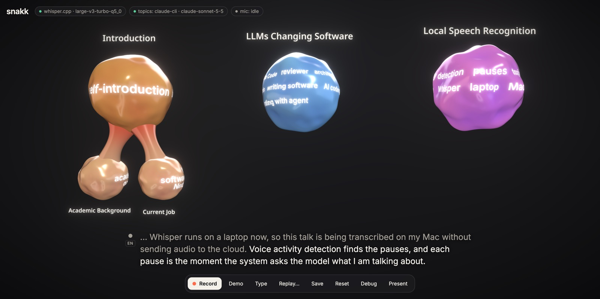
Introduction blob with two flowing necks down to Academic Background and Current Job, coloured from the section's orange to the sub-topics' peach.Needs your call
Open questions for the next session
These need your call before the next milestone. Comment on any of them.
Real-talk calibration. The pause that ends an utterance is 800 ms and a call fires at 8 words. Both were tuned on synthetic speech. I propose you record a 10-minute talk with Save, and we tune against that file using Replay without spending your voice again. Recommended as the next step.
Speed of the categorizer. Sonnet 5.5 through claude -p takes about 3.5 s per pause. Haiku 5.5 would be roughly twice as fast with weaker judgement on topic changes. I would stay on Sonnet until a real talk shows the lag matters.
Committing. Nothing is committed yet. I propose one initial commit on a branch, then a commit per milestone, with the build log linking each one.
Milestone
First end-to-end pipeline: microphone to blobs
M0 to M3 are in place and verified in Chrome. The Demo button plays a scripted version of your intro. Claude made an Introduction section with Academic Background and Current Job beneath it, then two big topics.
A live run fed a Norwegian and English recording through the real microphone path. Voice detection cut three utterances. Whisper detected the language switch by itself, and Claude titled the sections in the language spoken.
18 tests pass: the reducer, the topic engine's timing rules, the layout, the WAV encoder, language mapping, and a replay of real Claude output from the demo.
Replay was checked through the Replay button: the recorded Claude output rebuilds the same tree with no API calls. The screenshot is that replay.
Final transcript after a pause
1.4 to 2.1 s
Claude categorization (claude -p, Sonnet 5.5, low effort)
3.3 to 3.6 s
Whisper model
large-v3-turbo q5_0, 574 MB
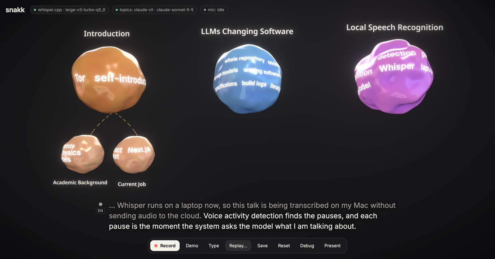
Replay of the recorded demo session: Introduction with Academic Background and Current Job, LLMs Changing Software, and Local Speech Recognition, keywords wrapped on each blob.Note
Live microphone test in Norwegian and English
The interim caption first read "Jeg heter Pryd" and the final corrected it, which is the intended behaviour.
Whisper wrote "Thor" for "Tor". A vocabulary field in the debug drawer now feeds names and terms to Whisper and to Claude. It fixed "Whisper"; the synthetic voice really does say "Thor", so that one needs your own voice to judge.
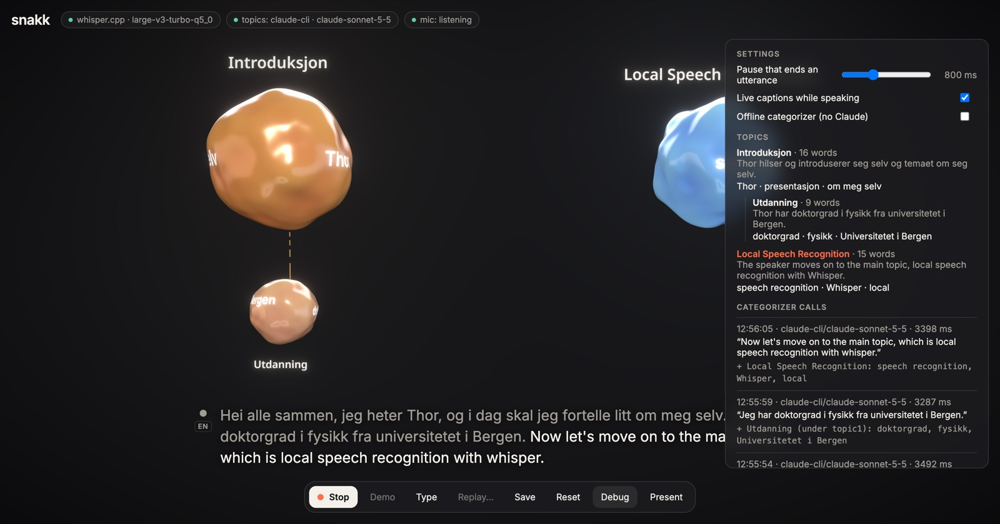
Introduksjon blob with an Utdanning sub-topic, a Local Speech Recognition blob, and the debug drawer listing topics, categorizer calls and the transcript.Decision
Categorize through claude -p with your Claude Code login
Context
There is no ANTHROPIC_API_KEY on this Mac. You asked whether the local app could pass the text to Claude with claude -p.
Choice
The server runs claude -p per pause with no tools, no settings, no MCP servers and no session file, a fixed system prompt, and a JSON schema for the output. With the defaults it loaded every plugin and cost 9 s; stripped down it takes about 3.5 s.
Consequences
TOPIC_PROVIDER=auto picks the API when a key exists, then claude -p, then an offline keyword heuristic. If a call fails, the client falls back to offline for that chunk and shows a notice.
Decision
Transcribe locally with whisper.cpp, cut at pauses by voice detection
Context
You wanted transcription on the Mac, in the spirit of metawhisp, with the language detected on the fly.
Choice
Silero voice detection runs in the browser and cuts speech at pauses. Each utterance goes to whisper-server (whisper.cpp, Metal) with language set to auto. whisper.cpp was already installed through Homebrew.
Considered
WhisperKit, the engine metawhisp uses. Adapter written; switch with STT_ENGINE=whisperkit.
Azure OpenAI realtime transcription. Cloud, so dropped.
Parakeet v3. No Norwegian.
WhisperLiveKit. Python, and its auto language mode is documented as biased toward English.
Consequences
The pause that ends an utterance is also the moment the topic engine asks Claude. Auto-detected languages outside the allowlist (no, en) are re-run with the last good language.
Decision
Vite, React, react-three-fiber and a small Hono server
Context
A canvas-heavy single page that needs a server for Whisper and Claude.
Choice
One package, one npm run dev for both processes. three is pinned to 0.186 because @react-three/postprocessing does not support 0.187 yet.
Consequences
Blob shaders use three-custom-shader-material on a physical material. Keywords are painted onto an equirectangular canvas texture, so they deform and rotate with the surface.
Note
Architecture
Every transcript event and every categorizer response is recorded, so any talk can be replayed into the scene, either with the recorded topics or re-categorized to test a prompt change.
flowchart LR
mic[Microphone] --> vad[Voice detection<br/>in browser]
vad -- utterance WAV --> stt[whisper.cpp<br/>large-v3-turbo]
stt -- text + language --> engine[Topic engine]
vad -- pause --> engine
engine -- topic tree + new text --> claude[Claude Sonnet 5.5<br/>claude -p]
claude -- topic ops --> reducer[Reducer with<br/>guardrails]
reducer --> scene[3D scene:<br/>blobs, bubbles, links]
engine -. every event .-> rec[Session recorder<br/>and replay]
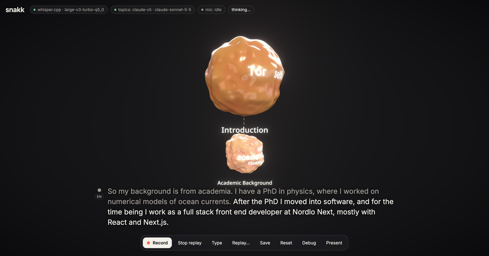
The first rendered section: an orange Introduction blob with an Academic Background sub-topic below it.